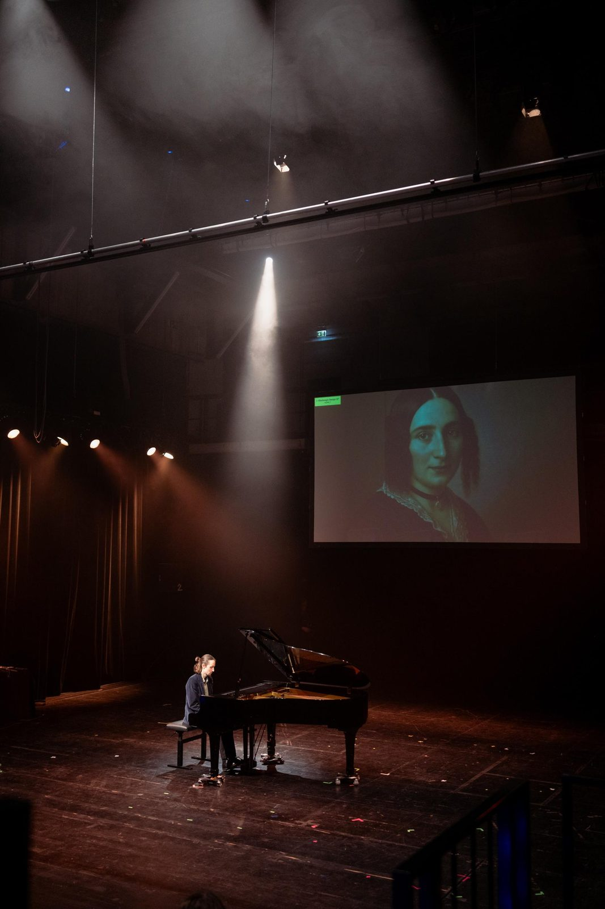
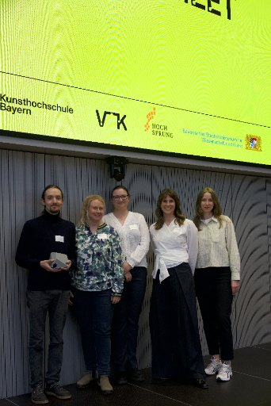
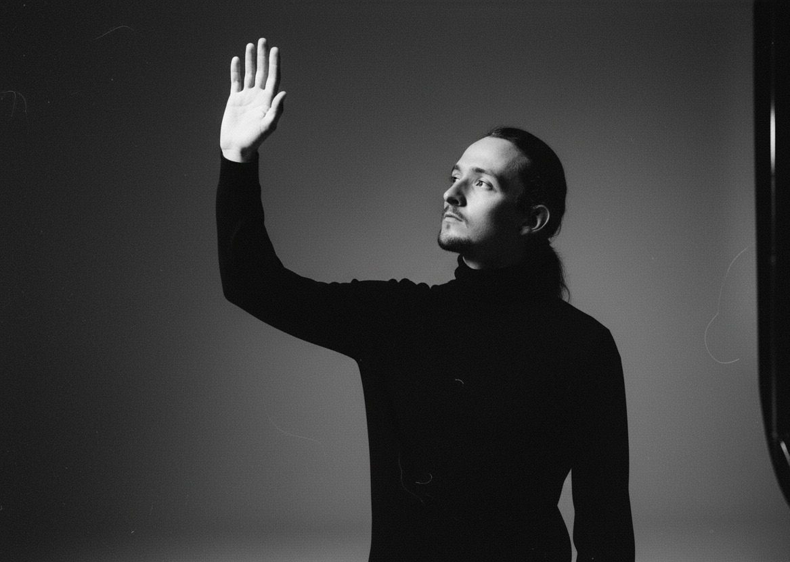

Im Dialog mit der Vergangenheit. Live · Faktenbasiert · Auf Augenhöhe
ComposerMeet ermöglicht interaktive Dialoge mit historischen Komponist*innen — live, auf der Bühne oder im Museum. Faktenbasiert, partizipativ und ästhetisch.
Sehen Sie ComposerMeet in Aktion.
Publikumsdialog mit Fanny Hensel — Live-Demonstration, Januar 2026
Was ist ComposerMeet?
ComposerMeet macht es möglich, mit Komponist*innen vergangener Zeiten in Echtzeit zu sprechen — so, als wären sie über Zoom zugeschaltet.
Das System verbindet kuratierte Primärquellen — Briefe, Tagebücher, wissenschaftliche Analysen, zeitgenössische Berichte — mit modernster KI-Technologie. Künstliche Intelligenz verknüpft die Quellen zu verständlichen, stilisierten Antworten — transparent, nachvollziehbar und kuratierbar.
Das Format ist partizipativ: Das Publikum wird von stillen Zuhörenden zu aktiv mitgestaltenden Fragenden. Musikvermittlung wird zu einem unmittelbaren Erlebnis — emotional, intellektuell und kreativ.
Faktenbasiert
Antworten beruhen auf dokumentierten Quellenbeständen. Dank Quellenangaben sind die Antworten transparent und nachvollziehbar.
Interaktiv
Das Publikum stellt Fragen, der Avatar reagiert dynamisch und situativ — Begegnungen auf Augenhöhe, nicht belehrend.
Kontextualisiert
Musik erscheint im Gefüge ihrer sozialen und historischen Bedingungen. Spekulative Passagen werden transparent markiert.
Frage. Quelle. Stimme. Avatar.
Eine vollständige Echtzeit-Pipeline — von der Publikumsfrage bis zur Antwort des Avatars.
Frage
Audio-Eingabe aus dem Publikum
Transkription
Die Frage wird verschriftlicht
Quellenrecherche
Briefe, Tagebücher und Analysen werden durchsucht
Antwort
Formuliert im historischen Stil, mit Quellenangabe
Avatar
Spricht die Antwort mit Stimme und Mimik
Auf der Bühne.
In Echtzeit.
Pilotfolge mit Fanny Hensel — Live-Konzert mit interaktivem Dialog auf der Bühne.
Foto: Jakob Schad
Sechs Gründe.
Partizipative Vermittlung
Das Publikum wird zum aktiven Teil des Geschehens. Konzertmoderation wird auf die Bedürfnisse der Zuhörenden zugeschnitten.
Verlässliche Inhalte
KI liefert fundierte, belastbare und nachvollziehbare Antworten auf Grundlage historischer Quellen.
Einfache Integration
Laptop mit Internet, Bildschirm, Mikrofon und Audioausgabe — mehr wird nicht benötigt.
Individuell anpassbar
Komponist*innen, Stil, Länge und Inhalte können flexibel an kuratorische Zielsetzungen angepasst werden.
State-of-the-Art-Technologie
Modernste KI-Verfahren für bestmögliche, interaktive Erlebnisse — technisch flexibel und erweiterbar.
Zukunftssicher
Von der Konzerteinführung bis zur Langzeitinstallation — ein Format, das mit seinen Einsatzfeldern wächst.
Wo ComposerMeet wirkt.
Installationen & Langzeitpräsentationen
Interaktive Begegnung mit historischen Persönlichkeiten in Museen, Ausstellungen oder öffentlichen Räumen.
Konzertmoderation & Werkeinführungen
Dialogische Einbindung historischer Perspektiven im Konzertablauf — 20 bis 30 Minuten, live vor dem Konzert.
Veranstaltungspausen & Foyergespräche
Niedrigschwellige Begegnung im Foyer — ideal als ergänzendes Erlebnisformat.
Musikunterricht & Education
Interaktive Auseinandersetzung mit Werken, Weltsicht und Biografien. KI, Autorschaft und historische Narrative werden kritisch reflektiert.
Hybrid-Events & Livestreams
Interaktive Abstimmungen, Fragen aus dem Publikum, digitale Einbindung — auch für dezentrales Publikum.
ComposerMeet wurde bereits bei mehreren Pilotprojekten erfolgreich eingesetzt und steht seit 2026 für Vermittlungsprojekte zur Verfügung. Erste Kooperationen sind für 2026 und 2027 geplant.
Honorable Mention.
„Auszeichnung für ein faszinierendes und quellenfundiertes, KI-basiertes Vermittlungsformat mit hoher Skalierbarkeit und einem innovativen Zugang zu musikalischer Bildung und Interaktion.“

Foto: Venture Team Kultur (Yolanda Castillo-Kuchenbecker)

Célest Lang.
Pianist und Musikvermittler mit Schwerpunkt auf innovativen Konzertformaten. Seine Arbeit verbindet künstlerische Praxis, technologische Neugier und eine quellenkritische Haltung gegenüber historischen Narrativen — an der Schnittstelle von Musik, KI und Kulturvermittlung.
- 01Künstlerische Praxis
- 02Technologische Neugier
- 03Quellenkritische Haltung